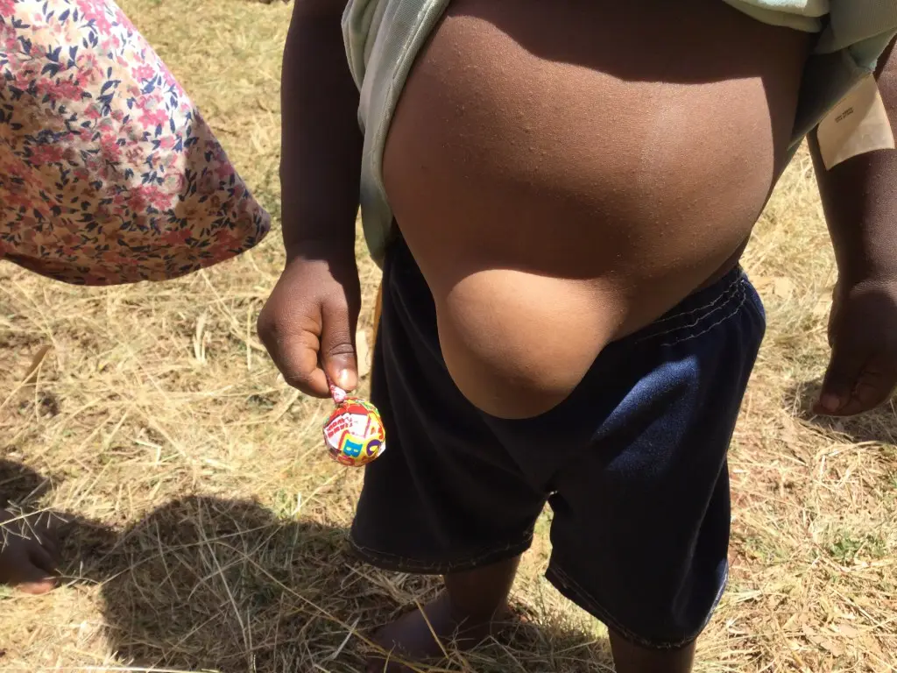
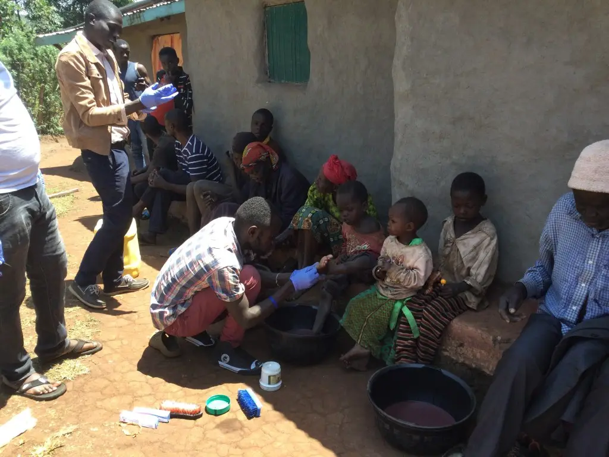

March 14, 2022
 Lani Orosco, co-founder
Lani Orosco, co-founderI’ve been here almost 6 weeks now, and am trying to go over all that has taken place. I’ve gotten lax in taking photos, and now am trying to remember what one little photo of a child meant, at the time I took it.
My son Ryan and I left Arizona on January 28th. The restrictions now require so many different things to be done before you leave the U.S. that it is nerve-wracking making sure everything is finished. A PCR test is required to board the first leg of the trip, along with each stop in each country. This test has a 72 hour shelf life, by the time we are scheduled to reach Nairobi, Kenya. At check-in, we were next to a lady who was crying because she had taken her PCR test 3 days before departure, and it would not be acceptable at her final destination. Ryan and I had our PCR tests done the day before, and paid extra for same-day results. We also had to have an e-Visa from Nairobi, which takes a few days to receive the online certificate. That also has to be presented at the first check-in of the trip. Nairobi Airport also requires a document that you fill out concerning where you are staying, who you might be staying with, how long you are staying, when you are leaving and if you have a cold, sniffles or a cough. This document SHOULD come with a QR emblem attached. Sometimes, the code comes the following day. It’s not something you do the day you fly out. So at this point, you should have your passport, e-ticket, boarding pass, vaccine documentation (required in Kenya), e-Visa, QR code and a headache. Ryan tried to give me tutorials on saving these documents onto my phone. Frustrating. I need paper.
So, it all worked out, we made it to Kenya even after almost missing our flight in Frankfurt. But, that’s another story.
The reason I came so early in the year, and less than 4 months from leaving Kenya last year, was to make a move to a different rental. My landlord for 10 years decided to build 3 condos on the property I was living on. It completely decimated the beautiful grassy yard we had, and blocked any view possible. And, he wanted my dogs to go. That was the hair that broke…
I had been looking before leaving last year, knowing at that point he had started digging the yard up, but there weren’t any possible sites available for me. Then in October, I received a call while home from some missionaries Coney and I fellowshipped with, telling me that they were moving to a different city and heard I was looking and would I want to rent their house? The only problem being that I would have to be there the last week in January. So, off we flew, and I started the move.
It’s a beautiful home, with the same amount of bedrooms and baths. I doubt I could have made the move without Ryan being here with me. 10 years in the other house meant 10 years of “stuff”. He took care of the physical moving and figuring out the 547 keys to all the doors in the new house. It’s like a fort. I definitely feel safe. It took us 3 days, but it was worth it.
Once we were “in the groove” in Kitale, we started feeding the widows every other week, Ryan preached at both the men’s and women’s prisons, and also spoke with a large group of street boys.
We met with our older boys that were now eager to start a business, go to a trade school or figure out their future. We now have 5 young men in trade schools, 3 young men starting out in businesses, one graduating high school this week, 3 graduating in the next couple of years. The smaller boys, are in elementary school. Considering all that has happened in the last 10 years, it is a blessing to see them grow up and mature.
Last month, we were visiting the widows and came across a family with several children. Because I carry lollipops when out, I approached the children to hand them each one. Isabel, the house mother, noticed the youngest girl had a swelling under her shirt, and upon checking she had an enormous belly-button hernia. The girl was maybe 18 months old. As we stood there talking with her father, we asked if we could help with the surgery needed for her. We will be going this week to make sure she sees a doctor so we can schedule everything.

Two weeks ago, while visiting a family that was dealing with jiggers, we found several small children who needed jiggers removed from their feet. It was terribly sad to hear the one little girl cry while she was worked on. We will also be returning this week for a checkup. The grandmother has asked for help with 6 children, whom she cannot support. A neighbor stepped in and tried to feed the children but was unable to. We will be visiting the local village chief to see about possibly taking in the little boys in hopes that the grandmother can provide for the girls. These are heart-wrenching situations.

We also are hoping for another little girl for whom we have been providing medical care, named Rehema. She has a bulging hump on her spine that cannot be removed. She has been to a hospital outside of Nairobi numerous times, only to hear on her last visit, that there is no hope in Kenya for her condition, that she needs to possibly go to Canada where there are specialists. Along with her, we have Byron, who has a dislocated shoulder, which took place at birth and was never dealt with, and who is now around 13, and facing heavy surgery.
I met with a member of our church last month, a women who has a 6 month old child, and who, with her child, was in a terrible car accident. The child was unhurt, but the window of the vehicle she was in, sliced off her fingers. She wears a glove that has the missing fingers stuffed with cloth. We are helping her with her regular visits, although therapy here is not what it is in America.
These are situations we find ourselves in frequently. Sometimes, I am overwhelmed by the lack of services here, and then I realize that if Missions for Orphans was not here, there would be nothing for any of these people. If they are born with a medical problem, they live and die with it. There are no social services here. We are it.
Looking back at what I have written, I realize that the difficult issues I dealt with while returning in January, are really nothing. I am so glad I am here. It is an honor and a privilege to be here, to help both children and adults, and to offer assistance when I can. I wish all of you could come over and stay with me. You would love it!
Kwaheri from Kitale. Mama Lani.